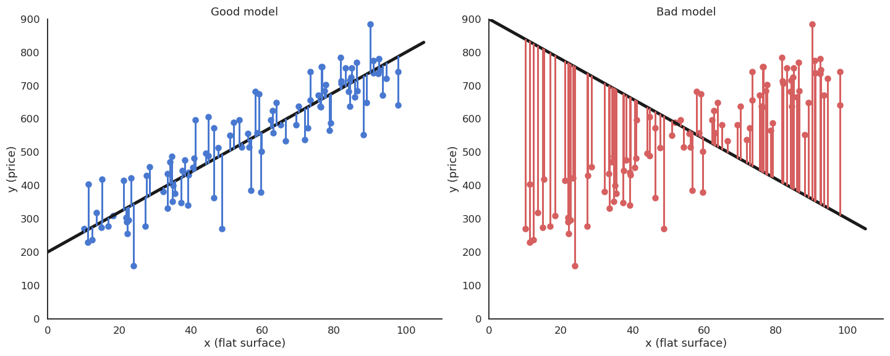
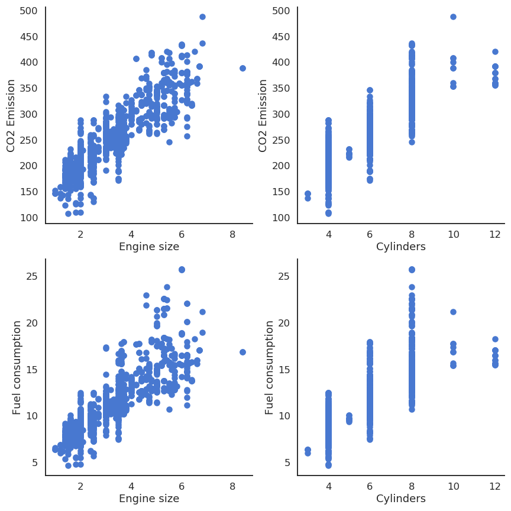
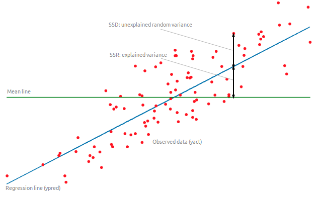
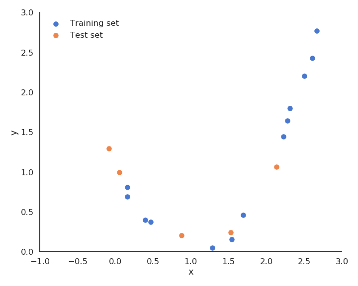
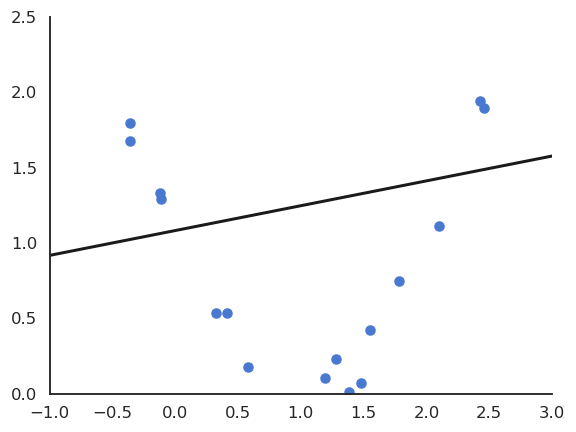
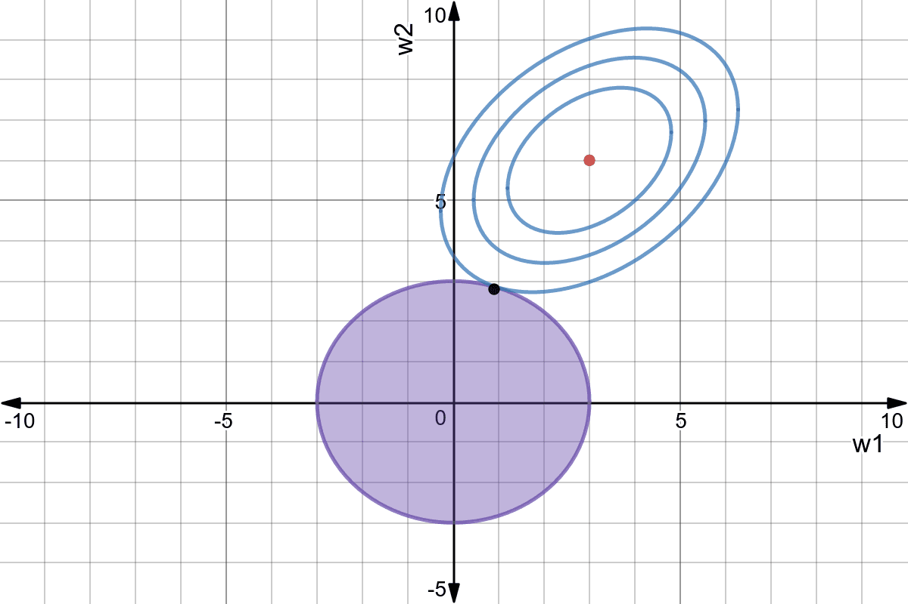

Linear regression
Linear regression

Let’s consider a training set of N examples \mathcal{D} = (x_i, t_i)_{i=1..N}. In linear regression, we want to learn a linear model (hypothesis) y that is linearly dependent on the input x:
y = f_{w, b}(x) = w \, x + b
The free parameters of the model are the slope w and the intercept b. This model corresponds to a single artificial neuron with output y, having one input x, one weight w, one bias b and a linear activation function f(x) = x.

The goal of the linear regression (or least mean squares - LMS) is to minimize the mean square error (mse) between the targets and the predictions. This loss function is defined as the mathematical expectation of the quadratic error over the training set:
\mathcal{L}(w, b) = \mathbb{E}_{x_i, t_i \in \mathcal{D}} [ (t_i - y_i )^2 ]
As the training set is finite and the samples i.i.d (independent and identically distributed), we can simply replace the expectation by a sampling average over the training set:
\mathcal{L}(w, b) = \frac{1}{N} \, \sum_{i=1}^{N} (t_i - y_i )^2
The minimum of the mse is achieved when the prediction y_i = f_{w, b}(x_i) is equal to the true value t_i for all training examples. In other words, we want to minimize the residual error of the model on the data. It is not always possible to obtain the global minimum (0) as the data may be noisy, but the closer, the better.

Least Mean Squares
We search for w and b which minimize the mean square error:
\mathcal{L}(w, b) = \frac{1}{N} \, \sum_{i=1}^{N} (t_i - y_i )^2
We will apply gradient descent to iteratively modify estimates of w and b:
\Delta w = - \eta \, \frac{\partial \mathcal{L}(w, b)}{\partial w} \Delta b = - \eta \, \frac{\partial \mathcal{L}(w, b)}{\partial b}
Let’s search for the partial derivative of the mean square error with respect to w:
\frac{\partial \mathcal{L}(w, b)}{\partial w} = \frac{\partial}{\partial w} [\frac{1}{N} \, \sum_{i=1}^{N} (t_i - y_i )^2]
Partial derivatives are linear, so the derivative of a sum is the sum of the derivatives:
\frac{\partial \mathcal{L}(w, b)}{\partial w} = \frac{1}{N} \, \sum_{i=1}^{N} \frac{\partial}{\partial w} (t_i - y_i )^2
This means we can compute a gradient for each training example instead of for the whole training set (see later the distinction batch/online):
\frac{\partial \mathcal{L}(w, b)}{\partial w} = \frac{1}{N} \, \sum_{i=1}^{N} \frac{\partial}{\partial w} \mathcal{l}_i(w, b) \qquad \text{with} \qquad \mathcal{l}_i(w, b) = (t_i - y_i )^2
The individual loss \mathcal{l}_i(w, b) = (t_i - y_i )^2 is the composition of two functions:
a square error function g_i(y_i) = (t_i - y_i)^2.
the prediction y_i = f_{w, b}(x_i) = w \, x_i + b.
The chain rule tells us how to derive such composite functions:
\frac{ d f(g(x))}{dx} = \frac{ d f(g(x))}{d g(x)} \times \frac{ d g(x)}{dx} = \frac{ d f(y)}{dy} \times \frac{ d g(x)}{dx}
The first derivative considers g(x) to be a single variable. Applied to our problem, this gives:
\frac{\partial}{\partial w} \mathcal{l}_i(w, b) = \frac{\partial g_i(y_i)}{\partial y_i} \times \frac{\partial y_i}{\partial w}
The square error function g_i(y) = (t_i - y)^2 is easy to differentiate w.r.t y:
\frac{\partial g_i(y_i)}{\partial y_i} = - 2 \, (t_i - y_i)
The prediction y_i = w \, x_i + b also w.r.t w and b:
\frac{\partial y_i}{\partial w} = x_i
\frac{\partial y_i}{\partial b} = 1
The partial derivative of the individual loss is:
\frac{\partial \mathcal{l}_i(w, b)}{\partial w} = - 2 \, (t_i - y_i) \, x_i
\frac{\partial \mathcal{l}_i(w, b)}{\partial b} = - 2 \, (t_i - y_i)
This gives us:
\frac{\partial \mathcal{L}(w, b)}{\partial w} = - \frac{2}{N} \sum_{i=1}^{N} (t_i - y_i) \, x_i
\frac{\partial \mathcal{L}(w, b)}{\partial b} = - \frac{2}{N} \sum_{i=1}^{N} (t_i - y_i)
Gradient descent is then defined by the learning rules (absorbing the 2 in \eta):
\Delta w = \eta \, \frac{1}{N} \sum_{i=1}^{N} (t_i - y_i) \, x_i
\Delta b = \eta \, \frac{1}{N} \sum_{i=1}^{N} (t_i - y_i)
Least Mean Squares (LMS) or Ordinary Least Squares (OLS) is a batch algorithm: the parameter changes are computed over the whole dataset.
\Delta w = \eta \, \frac{1}{N} \sum_{i=1}^{N} (t_i - y_i) \, x_i \Delta b = \eta \, \frac{1}{N} \sum_{i=1}^{N} (t_i - y_i)
The parameter changes have to be applied multiple times (epochs) in order for the parameters to converge. One can stop when the parameters do not change much, or after a fixed number of epochs.
w=0 \quad;\quad b=0
for M epochs:
dw=0 \quad;\quad db=0
for each sample (x_i, t_i):
y_i = w \, x_i + b
dw = dw + (t_i - y_i) \, x_i
db = db + (t_i - y_i)
\Delta w = \eta \, \frac{1}{N} dw
\Delta b = \eta \, \frac{1}{N} db

During learning, the mean square error (mse) decreases with the number of epochs but does not reach zero because of the noise in the data.

Delta learning rule
LMS is very slow, because it changes the weights only after the whole training set has been evaluated. It is also possible to update the weights immediately after each example using the delta learning rule, which is the online version of LMS:
\Delta w = \eta \, (t_i - y_i) \, x_i
\Delta b = \eta \, (t_i - y_i)
w=0 \quad;\quad b=0
for M epochs:
for each sample (x_i, t_i):
y_i = w \, x_i + b
\Delta w = \eta \, (t_i - y_i ) \, x_i
\Delta b = \eta \, (t_i - y_i)
The batch version is more stable, but the online version is faster: the weights have already learned something when arriving at the end of the first epoch. Note that the loss function is slightly higher at the end of learning (see Exercise 3 for a deeper discussion).


Multiple linear regression
The key idea of linear regression (one input x, one output y) can be generalized to multiple inputs and outputs.
Multiple Linear Regression (MLR) predicts several output variables based on several explanatory variables:
\begin{cases} y_1 = w_1 \, x_1 + w_2 \, x_2 + b_1\\ \\ y_2 = w_3 \, x_1 + w_3 \, x_2 + b_2\\ \end{cases}
Let’s suppose you have 13971 measurements in some Excel file, linking engine size, number of cylinders, fuel consumption and CO2 emissions of various cars. You want to predict fuel consumption and CO2 emissions when you know the engine size and the number of cylinders.
| Engine size | Cylinders | Fuel consumption | CO2 emissions |
|---|---|---|---|
| 2 | 4 | 8.5 | 196 |
| 2.4 | 4 | 9.6 | 221 |
| 1.5 | 4 | 5.9 | 136 |
| 3.5 | 6 | 11 | 255 |
| … | … | … | … |


We can notice that the output variables seem to linearly depend on the inputs. Noting the input variables x_1, x_2 and the output ones y_1, y_2, we can define our problem as a multiple linear regression:
\begin{cases} y_1 = w_1 \, x_1 + w_2 \, x_2 + b_1\\ \\ y_2 = w_3 \, x_1 + w_3 \, x_2 + b_2\\ \end{cases}
and solve it using the least mean squares method by minimizing the mse between the model and the data.

Using the Python library scikit-learn (https://scikit-learn.org), this is done in two lines of code:
from sklearn.linear_model import LinearRegression
reg = LinearRegression().fit(X, y)The system of equations:
\begin{cases} y_1 = w_1 \, x_1 + w_2 \, x_2 + b_1\\ \\ y_2 = w_3 \, x_1 + w_4 \, x_2 + b_2\\ \end{cases}
can be put in a matrix-vector form:
\begin{bmatrix} y_1 \\ y_2 \\\end{bmatrix} = \begin{bmatrix} w_1 & w_2 \\ w_3 & w_4 \\\end{bmatrix} \times \begin{bmatrix} x_1 \\ x_2 \\\end{bmatrix} + \begin{bmatrix} b_1 \\ b_2 \\\end{bmatrix}
We simply create the corresponding vectors and matrices:
\mathbf{x} = \begin{bmatrix} x_1 \\ x_2 \\\end{bmatrix} \qquad \mathbf{y} = \begin{bmatrix} y_1 \\ y_2 \\\end{bmatrix} \qquad \mathbf{t} = \begin{bmatrix} t_1 \\ t_2 \\\end{bmatrix} \qquad \mathbf{b} = \begin{bmatrix} b_1 \\ b_2 \\\end{bmatrix} \qquad W = \begin{bmatrix} w_1 & w_2 \\ w_3 & w_4 \\\end{bmatrix}
\mathbf{x} is the input vector, \mathbf{y} is the output vector, \mathbf{t} is the target vector. W is called the weight matrix and \mathbf{b} the bias vector.
The model is now defined by:
\mathbf{y} = f_{W, \mathbf{b}}(\mathbf{x}) = W \times \mathbf{x} + \mathbf{b}
The problem is exactly the same as before, except that we use vectors and matrices instead of scalars: \mathbf{x} and \mathbf{y} can have any number of dimensions, the same procedure will apply. This corresponds to a linear neural network (or linear perceptron), with one output neuron per predicted value y_i using the linear activation function.
The mean square error still needs to be a scalar in order to be minimized. We can define it as the squared norm of the error vector:
\min_{W, \mathbf{b}} \, \mathcal{L}(W, \mathbf{b}) = \mathbb{E}_\mathcal{D} [ ||\mathbf{t} - \mathbf{y}||^2 ] = \mathbb{E}_\mathcal{D} [ ((t_1 - y_1)^2 + (t_2 - y_2)^2) ]
In order to apply gradient descent, one needs to calculate partial derivatives w.r.t the weight matrix W and the bias vector \mathbf{b}, i.e. gradients:
\begin{cases} \Delta W = - \eta \, \nabla_W \, \mathcal{L}(W, \mathbf{b}) \\ \\ \Delta \mathbf{b} = - \eta \, \nabla_\mathbf{b} \, \mathcal{L}(W, \mathbf{b}) \\ \end{cases}
Some more advanced linear algebra becomes important to know how to compute these gradients:
https://web.stanford.edu/class/cs224n/readings/gradient-notes.pdf
We search the minimum of the mse loss function:
\min_{W, \mathbf{b}} \, \mathcal{L}(W, \mathbf{b}) = \mathbb{E}_\mathcal{D} [ ||\mathbf{t} - \mathbf{y}||^2 ] \approx \frac{1}{N} \, \sum_{i=1}^N ||\mathbf{t}_i - \mathbf{y}_i||^2 = \frac{1}{N} \, \sum_{i=1}^N \mathcal{l}_i(W, \mathbf{b})
The individual loss function \mathcal{l}_i(W, \mathbf{b}) is the squared \mathcal{L}^2-norm of the error vector, what can be expressed as a dot product or a vector multiplication:
\mathcal{l}_i(W, \mathbf{b}) = ||\mathbf{t}_i - \mathbf{y}_i||^2 = \langle \mathbf{t}_i - \mathbf{y}_i \cdot \mathbf{t}_i - \mathbf{y}_i \rangle = (\mathbf{t}_i - \mathbf{y}_i)^T \times (\mathbf{t}_i - \mathbf{y}_i)
Remember:
\mathbf{x}^T \times \mathbf{x} = \begin{bmatrix} x_1 & x_2 & \ldots & x_n \end{bmatrix} \times \begin{bmatrix} x_1 \\ x_2 \\ \vdots \\ x_n \end{bmatrix} = x_1 \, x_1 + x_2 \, x_2 + \ldots + x_n \, x_n = \langle \mathbf{x} \cdot \mathbf{x} \rangle = ||\mathbf{x}||^2_2
The chain rule tells us in principle that:
\nabla_{W} \, \mathcal{l}_i(W, \mathbf{b}) = \nabla_{\mathbf{y}_i} \, \mathcal{l}_i(W, \mathbf{b}) \times \nabla_{W} \, \mathbf{y}_i
The gradient w.r.t the output vector \mathbf{y}_i is quite easy to obtain, as it a quadratic function of \mathbf{t}_i - \mathbf{y}_i:
\nabla_{\mathbf{y}_i} \, \mathcal{l}_i(W, \mathbf{b}) = \nabla_{\mathbf{y}_i} \, (\mathbf{t}_i - \mathbf{y}_i)^T \times (\mathbf{t}_i - \mathbf{y}_i)
The proof relies on product differentiation (f\times g)' = f' \, g + f \, g':
\begin{aligned} \nabla_{\mathbf{y}_i} \, (\mathbf{t}_i - \mathbf{y}_i)^T \times (\mathbf{t}_i - \mathbf{y}_i) & = ( \nabla_{\mathbf{y}_i} \, (\mathbf{t}_i - \mathbf{y}_i) ) \times (\mathbf{t}_i - \mathbf{y}_i) + (\mathbf{t}_i - \mathbf{y}_i) \times \nabla_{\mathbf{y}_i} \, (\mathbf{t}_i - \mathbf{y}_i) \\ &\\ &= - (\mathbf{t}_i - \mathbf{y}_i) - (\mathbf{t}_i - \mathbf{y}_i) \\ &\\ &= - 2 \, (\mathbf{t}_i - \mathbf{y}_i) \\ \end{aligned}
We use the properties \nabla_{\mathbf{x}}\, \mathbf{x}^T \times \mathbf{z} = \mathbf{z} and \nabla_{\mathbf{z}} \, \mathbf{x}^T \times \mathbf{z} = \mathbf{x} to get rid of the transpose.
The “problem” is when computing \nabla_{W} \, \mathbf{y}_i = \nabla_{W} \, (W \times \mathbf{x}_i + \mathbf{b}): * \mathbf{y}_i is a vector and W a matrix. * \nabla_{W} \, \mathbf{y}_i is then a Jacobian (matrix), not a gradient (vector).
Intuitively, differentiating W \times \mathbf{x}_i + \mathbf{b} w.r.t W should return \mathbf{x}_i, but it is a vector, not a matrix…
Actually, only the gradient (or Jacobian) of \mathcal{l}_i(W, \mathbf{b}) w.r.t W should be a matrix of the same size as W so that we can apply gradient descent:
\Delta W = - \eta \, \nabla_W \, \mathcal{L}(W, \mathbf{b})
We already know that:
\nabla_{W} \, \mathcal{l}_i(W, \mathbf{b}) = - 2\, (\mathbf{t}_i - \mathbf{y}_i) \times \nabla_{W} \, \mathbf{y}_i
If \mathbf{x}_i has n elements and \mathbf{y}_i m elements, W is a m \times n matrix.
Remember the outer product between two vectors:
\mathbf{u} \times \mathbf{v}^\textsf{T} = \begin{bmatrix}u_1 \\ u_2 \\ u_3 \\ u_4\end{bmatrix} \begin{bmatrix}v_1 & v_2 & v_3\end{bmatrix} = \begin{bmatrix} u_1v_1 & u_1v_2 & u_1v_3 \\ u_2v_1 & u_2v_2 & u_2v_3 \\ u_3v_1 & u_3v_2 & u_3v_3 \\ u_4v_1 & u_4v_2 & u_4v_3 \end{bmatrix}.
It is easy to see that the outer product between (\mathbf{t}_i - \mathbf{y}_i) and \mathbf{x}_i gives a m \times n matrix:
\nabla_W \, \mathcal{l}_i(W, \mathbf{b}) = - 2 \, (\mathbf{t}_i - \mathbf{y}_i) \times \mathbf{x}_i^T\\
Let’s prove it element per element on a small matrix:
\mathbf{y} = W \times \mathbf{x} + \mathbf{b}
\begin{bmatrix} y_1 \\ y_2 \\\end{bmatrix} = \begin{bmatrix} w_1 & w_2 \\ w_3 & w_4 \\\end{bmatrix} \times \begin{bmatrix} x_1 \\ x_2 \\\end{bmatrix} + \begin{bmatrix} b_1 \\ b_2 \\\end{bmatrix}
\mathcal{l}(W, \mathbf{b}) = (\mathbf{t} - \mathbf{y})^T \times (\mathbf{t} - \mathbf{y}) = \begin{bmatrix} t_1 - y_1 & t_2 - y_2 \\\end{bmatrix} \times \begin{bmatrix} t_1 - y_1 \\ t_2 - y_2 \\\end{bmatrix} = (t_1 - y_1)^2 + (t_2 - y_2)^2
The Jacobian w.r.t W can be explicitly formed using partial derivatives:
\nabla_W \, \mathcal{l}(W, \mathbf{b}) = \begin{bmatrix} \dfrac{\partial \mathcal{l}(W, \mathbf{b})}{\partial w_1} & \dfrac{\partial \mathcal{l}(W, \mathbf{b})}{\partial w_2} \\ \dfrac{\partial \mathcal{l}(W, \mathbf{b})}{\partial w_3} & \dfrac{\partial \mathcal{l}(W, \mathbf{b})}{\partial w_4} \\ \end{bmatrix} = \begin{bmatrix} -2 \, (t_1 - y_1) \, x_1 & -2 \, (t_1 - y_1) \, x_2 \\ -2 \, (t_2 - y_2) \, x_1 & -2 \, (t_2 - y_2) \, x_2 \\ \end{bmatrix}
We can rearrange this matrix as an outer product:
\nabla_W \, \mathcal{l}(W, \mathbf{b}) = -2 \, \begin{bmatrix} t_1 - y_1 \\ t_2 - y_2 \\ \end{bmatrix} \times \begin{bmatrix} x_1 & x_2 \\ \end{bmatrix} = - 2 \, (\mathbf{t} - \mathbf{y}) \times \mathbf{x}^T
Multiple linear regression
- Batch version (least mean squares):
\begin{cases} \Delta W = \eta \, \dfrac{1}{N} \sum_{i=1}^N \, (\mathbf{t}_i - \mathbf{y}_i ) \times \mathbf{x}_i^T \\ \\ \Delta \mathbf{b} = \eta \, \dfrac{1}{N} \sum_{i=1}^N \, (\mathbf{t}_i - \mathbf{y}_i) \\ \end{cases}
- Online version (delta learning rule):
\begin{cases} \Delta W = \eta \, (\mathbf{t}_i - \mathbf{y}_i ) \times \mathbf{x}_i^T \\ \\ \Delta \mathbf{b} = \eta \, (\mathbf{t}_i - \mathbf{y}_i) \\ \end{cases}
The matrix-vector notation is completely equivalent to having one learning rule per parameter:
\begin{cases} \Delta w_1 = \eta \, (t_1 - y_1) \, x_1 \\ \Delta w_2 = \eta \, (t_1 - y_1) \, x_2 \\ \Delta w_3 = \eta \, (t_2 - y_2) \, x_1 \\ \Delta w_4 = \eta \, (t_2 - y_2) \, x_2 \\ \end{cases} \qquad \begin{cases} \Delta b_1 = \eta \, (t_1 - y_1) \\ \Delta b_2 = \eta \, (t_2 - y_2) \\ \end{cases}
The delta learning rule is always of the form: \Delta w = eta * error * input. Biases have an input of 1.
Logistic regression
Let’s suppose we want to perform a regression, but where the outputs t_i are bounded between 0 and 1. We could use a logistic (or sigmoid) function instead of a linear function in order to transform the input into an output:
y = \sigma(w \, x + b ) = \displaystyle\frac{1}{1+\exp(-w \, x - b )}

By definition of the logistic function, the prediction y will be bounded between 0 and 1, what matches the targets t. Let’s now apply gradient descent on the mse loss using this new model. The individual loss will be:
l_i(w, b) = (t_i - \sigma(w \, x_i + b) )^2
The partial derivative of the individual loss is easy to find using the chain rule:
\begin{aligned} \displaystyle\frac{\partial l_i(w, b)}{\partial w} &= 2 \, (t_i - y_i) \, \frac{\partial}{\partial w} (t_i - \sigma(w \, x_i + b ))\\ &\\ &= - 2 \, (t_i - y_i) \, \sigma'(w \, x_i + b ) \, x_i \\ \end{aligned}
The non-linear transfer function \sigma(x) therefore adds its derivative into the gradient:
\Delta w = \eta \, (t_i - y_i) \, \sigma'(w \, x_i + b ) \, x_i
The logistic function \sigma(x)=\frac{1}{1+\exp(-x)} has the nice property that its derivative can be expressed easily:
\sigma'(x) = \sigma(x) \, (1 - \sigma(x) )
Here is the proof using the fact that the derivative of \displaystyle\frac{1}{f(x)} is \displaystyle\frac{- f'(x)}{f^2(x)} :
\begin{aligned} \sigma'(x) & = \displaystyle\frac{-1}{(1+\exp(-x))^2} \, (- \exp(-x)) \\ &\\ &= \frac{1}{1+\exp(-x)} \times \frac{\exp(-x)}{1+\exp(-x)}\\ &\\ &= \frac{1}{1+\exp(-x)} \times \frac{1 + \exp(-x) - 1}{1+\exp(-x)}\\ &\\ &= \frac{1}{1+\exp(-x)} \times (1 - \frac{1}{1+\exp(-x)})\\ &\\ &= \sigma(x) \, (1 - \sigma(x) )\\ \end{aligned}
The delta learning rule for the logistic regression model is therefore easy to obtain:
\begin{cases} \Delta w = \eta \, (t_i - y_i) \, y_i \, ( 1 - y_i ) \, x_i \\ \\ \Delta b = \eta \, (t_i - y_i) \, y_i \, ( 1 - y_i ) \\ \end{cases}
Generalized form of the delta learning rule
For a linear perceptron with parameters W and \mathbf{b} and any activation function f:
\mathbf{y} = f(W \times \mathbf{x} + \mathbf{b} )
and the mse loss function:
\mathcal{L}(W, \mathbf{b}) = \mathbb{E}_{\mathcal{D}}[||\mathbf{t} - \mathbf{y}||^2]
the delta learning rule has the form:
\begin{cases} \Delta W = \eta \, [(\mathbf{t} - \mathbf{y}) \odot f'(W \times \mathbf{x} + \mathbf{b}) ] \times \mathbf{x}^T \\ \\ \Delta \mathbf{b} = \eta \, (\mathbf{t} - \mathbf{y}) \odot f'(W \times \mathbf{x} + \mathbf{b}) \\ \end{cases}
\odot denotes element-wise multiplication, i.e. (\mathbf{t} - \mathbf{y}) \odot f'(W \times \mathbf{x} + \mathbf{b}) is also a vector.
In the linear case, f'(x) = 1. One can use any non-linear function, e.g hyperbolic tangent tanh(), ReLU, etc. Transfer functions are chosen for neural networks so that we can compute their derivative easily.
Polynomial regression

The functions underlying real data are rarely linear plus some noise around the ideal value. In the figure above, the input/output function is better modeled by a second-order polynomial:
y = f_{\mathbf{w}, b}(x) = w_1 \, x + w_2 \, x^2 +b
We can transform the input into a vector of coordinates:
\mathbf{x} = \begin{bmatrix} x \\ x^2 \\ \end{bmatrix} \qquad \mathbf{w} = \begin{bmatrix} w_1 \\ w_2 \\ \end{bmatrix}
The problem becomes:
y = \langle \mathbf{w} . \mathbf{x} \rangle + b = \sum_j w_j \, x_j + b
We can simply apply multiple linear regression (MLR) to find \mathbf{w} and b:
\begin{cases} \Delta \mathbf{w} = \eta \, (t - y) \, \mathbf{x}\\ \\ \Delta b = \eta \, (t - y)\\ \end{cases}
This generalizes to polynomials of any order p:
y = f_{\mathbf{w}, b}(x) = w_1 \, x + w_2 \, x^2 + \ldots + w_p \, x^p + b
We create a vector of powers of x:
\mathbf{x} = \begin{bmatrix} x \\ x^2 \\ \ldots \\ x^p \end{bmatrix} \qquad \mathbf{w} = \begin{bmatrix} w_1 \\ w_2 \\ \ldots \\ w_p \end{bmatrix}
ad apply multiple linear regression (MLR) to find \mathbf{w} and b:
\begin{cases} \Delta \mathbf{w} = \eta \, (t - y) \, \mathbf{x}\\ \\ \Delta b = \eta \, (t - y)\\ \end{cases}
Non-linear problem solved! The only unknown is which order for the polynomial matches best the data. One can perform regression with any kind of parameterized function using gradient descent.
A bit of learning theory
Before going further, let’s think about what we have been doing so far. We had a bunch of data samples \mathcal{D} = (\mathbf{x}_i, t_i)_{i=1..N} (the training set). We decided to apply a (linear) model on it:
y_i = \langle \mathbf{w} . \mathbf{x}_i \rangle + b
We then minimized the mean square error (mse) on that training set using gradient descent:
\mathcal{L}(w, b) = \mathbb{E}_{\mathbf{x}, t \in \mathcal{D}} [(t_i - y_i )^2]
At the end of learning, we can measure the residual error of the model on the data:
\epsilon_\mathcal{D} = \frac{1}{N} \, \sum_{i=1}^{N} (t_i - y_i )^2
We get a number, for example 0.04567. Is that good?
The mean square error mse is not very informative, as its value depends on how the outputs are scaled: multiply the targets and prediction by 10 and the mse is 100 times higher.
The coefficient of determination R^2 is a rescaled variant of the mse comparing the variance of the residuals to the variance of the data around its mean \hat{t}:
R^2 = 1 - \frac{\text{Var}(\text{residuals})}{\text{Var}(\text{data})} = 1 - \frac{\sum_{i=1}^N (t_i- y_i)^2}{\sum_{i=1}^N (t_i - \hat{t})^2}
R^2 should be as close from 1 as possible. For example, if R^2 = 0.8, we can say that the model explains 80% of the variance of the data.

Sensibility to outliers
Suppose we have a training set with one outlier (bad measurement, bad luck, etc).

LMS would find the minimum of the mse, but it is clearly a bad fit for most points.

This model feels much better, but its residual mse is actually higher…

Let’s visualize polynomial regression with various orders of the polynomial on a small dataset.

When only looking at the residual mse on the training data, one could think that the higher the order of the polynomial, the better. But it is obvious that the interpolation quickly becomes very bad when the order is too high. A complex model (with a lot of parameters) is useless for predicting new values. We actually do not care about the error on the training set, but about generalization.

Cross-validation
Let’s suppose we dispose of m models \mathcal{M} = \{ M_1, ..., M_m\} that could be used to fit (or classify) some data \mathcal{D} = \{\mathbf{x}_i, t_i\}_{i=1}^N. Such a class could be the ensemble of polynomes with different orders, different algorithms (NN, SVM) or the same algorithm with different values for the hyperparameters (learning rate, regularization parameters…).
The naive and wrong method to find the best hypothesis would be:
For all models M_i:
Train M_i on \mathcal{D} to obtain an hypothesis h_i.
Compute the training error \epsilon_\mathcal{D}(h_i) of h_i on \mathcal{D} :
\epsilon_\mathcal{D}(h_i) = \mathbb{E}_{(\mathbf{x}, t) \in \mathcal{D}} [(h_i(\mathbf{x}) - t)^2]
Select the hypothesis h_{i}^* with the minimal training error : h_{i}^* = \text{argmin}_{h_i \in \mathcal{M}} \quad \epsilon_\mathcal{D}(h_i)
This method leads to overfitting, as only the training error is used.
The solution is randomly take some samples out of the training set to form the test set. Typical values are 20 or 30 % of the samples in the test set.
- Train the model on the training set (70% of the data).
- Test the performance of the model on the test set (30% of the data).

The test performance will better measure how well the model generalizes to new examples.
Split the training data \mathcal{D} into \mathcal{S}_{\text{train}} and \mathcal{S}_{\text{test}}.
For all models M_i:
Train M_i on \mathcal{S}_{\text{train}} to obtain an hypothesis h_i.
Compute the empirical error \epsilon_{\text{test}}(h_i) of h_i on \mathcal{S}_{\text{test}} :
\epsilon_{\text{test}}(h_i) = \mathbb{E}_{(\mathbf{x}, t) \in \mathcal{S}_{\text{test}}} [(h_i(\mathbf{x}) - t)^2]
Select the hypothesis h_{i}^* with the minimal empirical error : h_{i}^* = \text{argmin}_{h_i \in \mathcal{M}} \quad \epsilon_{\text{test}}(h_i)
The disadvantage of simple hold-out cross-validation is that 20 or 30% of the data is wasted and not used for learning. It may be a problem when data is rare or expensive.
k-fold cross-validation allows a more efficient use os the available data and a better measure of the generalization error. The idea is to build several different training/test sets with the same data, train and test each model repeatedly on each partition and choose the hypothesis that works best on average.

{kind=link}
Randomly split the data \mathcal{D} into k subsets of \frac{N}{k} examples \{ \mathcal{S}_{1}, \dots , \mathcal{S}_{k}\}
For all models M_i:
For all k subsets \mathcal{S}_j:
Train M_i on \mathcal{D} - \mathcal{S}_j to obtain an hypothesis h_{ij}
Compute the empirical error \epsilon_{\mathcal{S}_j}(h_{ij}) of h_{ij} on \mathcal{S}_j
The empirical error of the model M_i on \mathcal{D} is the average of empirical errors made on (\mathcal{S}_j)_{j=1}^{k}
\epsilon_{\mathcal{D}} (M_i) = \frac{1}{k} \cdot \sum_{j=1}^{k} \epsilon_{\mathcal{S}_j}(h_{ij})
Select the model M_{i}^* with the minimal empirical error on \mathcal{D}.
In general, you can take k=10 partitions. The extreme case is to take k=N partition, i.e. the test set has only one sample each time: leave-one-out cross-validation. k-fold cross-validation works well, but needs a lot of repeated learning.
Underfitting - overfitting
While the training mse always decrease with more complex models, the test mse increases after a while. This is called overfitting: learning by heart the data without caring about generalization. The two curves suggest that we should chose a polynomial order between 2 and 9.

A model not complex enough for the data will underfit: its training error is high. A model too complex for the data will overfit: its test error is high. In between, there is the right complexity for the model: it learns the data correctly but does not overfit.

What does complexity mean? In polynomial regression, the complexity is related to the order of the polynomial, i.e. the number of coefficients to estimate:
y = f_{\mathbf{w}, b}(x) = \sum_{k=1}^p w_k \, x^k + b
\mathbf{x} = \begin{bmatrix} x \\ x^2 \\ \ldots \\ x^p \end{bmatrix} \qquad \mathbf{w} = \begin{bmatrix} w_1 \\ w_2 \\ \ldots \\ w_p \end{bmatrix}
A polynomial of order p has p+1 unknown parameters (free parameters): the p weights and the bias. Generally, the complexity of a model relates to its number of free parameters:
The more free parameters, the more complex the model is, the more likely it will overfit.
Under-/Over-fitting relates to the statistical concept of bias-variance trade-off. The bias is the training error that the hypothesis would make if the training set was infinite (accuracy, flexibility of the model): a model with high bias is underfitting. The variance is the error that will be made by the hypothesis on new examples taken from the same distribution (spread, the model is correct on average, but not for individual samples): a model with high variance is overfitting.

The bias decreases when the model becomes complex; the variance increases when the model becomes complex. The generalization error is a combination of the bias and variance:
\text{generalization error} = \text{bias}^2 + \text{variance}
We search for the model with the optimum complexity realizing the trade-off between bias and variance. It is better to have a model with a slightly higher bias (training error) but with a smaller variance (generalization error).

Regularized regression
Linear regression can either underfit or overfit depending on the data.

When linear regression underfits (both training and test errors are high), the data is not linear: we need to use a neural network. When linear regression overfits (the test error is higher than the training error), we would like to decrease its complexity.
The problem is that the number of free parameters in linear regression only depends on the number of inputs (dimensions of the input space).
y = \sum_{i=1}^d w_i \, x_i + b
For d inputs, there are d+1 free parameters: the d weights and the bias.
We must find a way to reduce the complexity of the linear regression without changing the number of parameters, which is impossible. The solution is to constrain the values that the parameters can take: regularization. Regularization reduces the variance at the cost of increasing the bias.
L2 regularization - Ridge regression
Using L2 regularization for linear regression leads to the Ridge regression algorithm. The individual loss function is defined as:
\mathcal{l}_i(\mathbf{w}, b) = (t_i - y_i)^2 + \lambda \, ||\mathbf{w}||^2
The first part of the loss function is the classical mse on the training set: its role is to reduce the bias. The second part minimizes the L2 norm of the weight vector (or matrix), reducing the variance:
||\mathbf{w}||^2 = \sum_{i=1}^d w_i^2
Deriving the regularized delta learning rule is straightforward:
\Delta w_i = \eta \, ((t_i - y_i) \ x_i - \lambda \, w_i)
Ridge regression is also called weight decay: even if there is no error, all weights will decay to 0.

L1 regularization - LASSO regression
Using L1 regularization for linear regression leads to the LASSO regression algorithm (least absolute shrinkage and selection operator). The individual loss function is defined as:
\mathcal{l}_i(\mathbf{w}, b) = (t_i - y_i)^2 + \lambda \, |\mathbf{w}|
The second part minimizes this time the L1 norm of the weight vector, i.e. its absolute value:
|\mathbf{w}| = \sum_{i=1}^d |w_i|
Regularized delta learning rule with LASSO:
\Delta w_i = \eta \, ((t_i - y_i) \ x_i - \lambda \, \text{sign}(w_i))
Weight decay does not depend on the value of the weight, only its sign. Weights can decay very fast to 0.

Both methods depend on the regularization parameter \lambda. Its value determines how important the regularization term should. Regularization introduce a bias, as the solution found is not the minimum of the mse, but reduces the variance of the estimation, as small weights are less sensible to noise.
LASSO allows feature selection: features with a zero weight can be removed from the training set.


L1+L2 regularization - ElasticNet
An ElasticNet is a linear regression using both L1 and L2 regression:
\mathcal{l}_i(\mathbf{w}, b) = (t_i - y_i)^2 + \lambda_1 \, |\mathbf{w}| + \lambda_2 \, ||\mathbf{w}||^2
It combines the advantages of Ridge and LASSO, at the cost of having now two regularization parameters to determine.